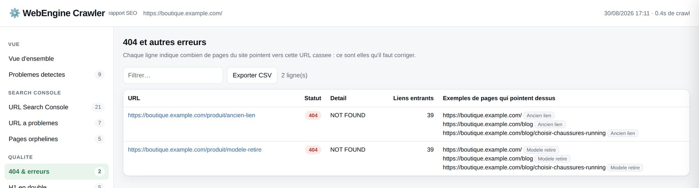
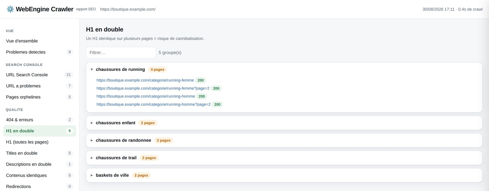
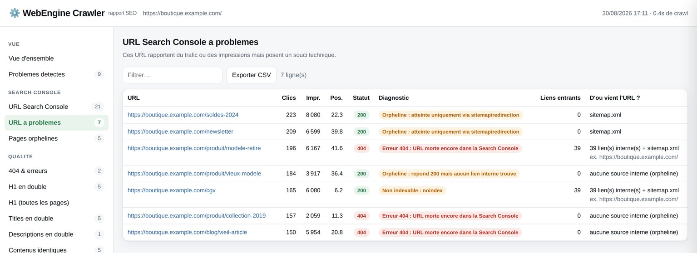
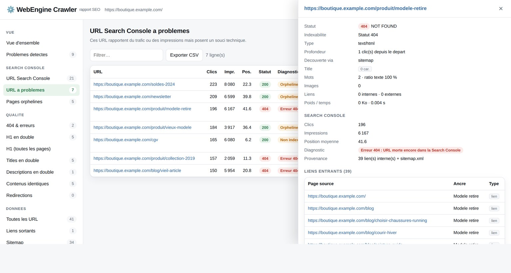
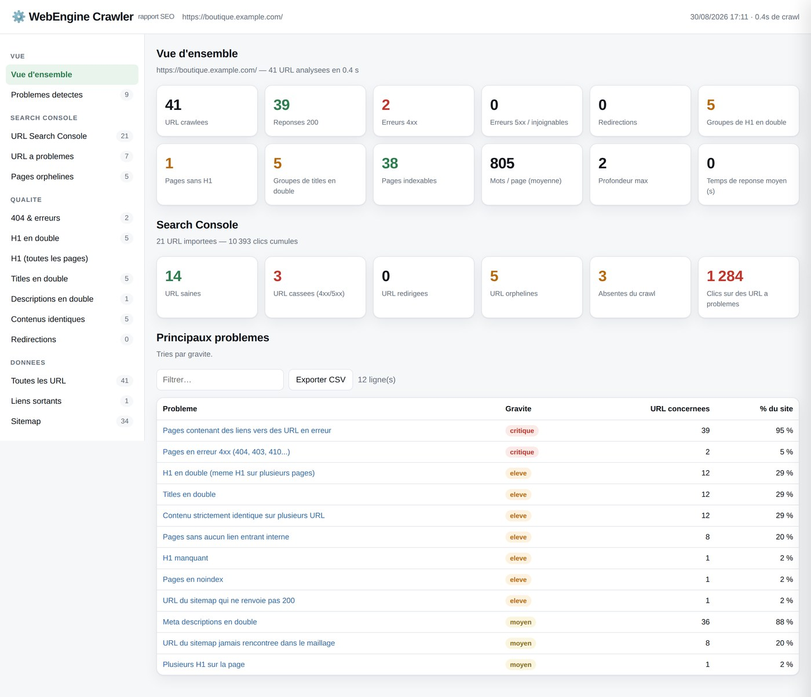

Le crawler SEO qui vous dit d'où viennent vos 404.
WebEngine Crawler audite votre site depuis votre machine : H1 en double, erreurs 404 avec la liste des pages qui pointent dessus, et croisement direct de votre export Search Console. Sans limite de 500 URL, sans compte, sans envoi de données.
Un audit ne sert à rien s'il ne dit pas quoi corriger.
La plupart des outils listent les problèmes. WebEngine Crawler remonte aussi la cause : la page exacte qui contient le lien cassé, et l'ancre utilisée.
Vos 404, et les pages à modifier
Chaque URL en erreur arrive avec son nombre de liens entrants et les pages sources. Vous ne cherchez plus d'où vient le lien : il est dans le tableau.
- Page source et ancre pour chaque lien cassé
- Chaînes et boucles de redirection
- Pages qui lient vers une redirection au lieu de la cible
- Erreurs 5xx, timeouts et liens sortants morts

Les H1 en double, regroupés
Deux pages avec le même H1 se cannibalisent. WebEngine Crawler les regroupe par valeur : vous voyez immédiatement les gabarits qui se répètent et les paginations mal gérées.
- H1 dupliqué, manquant, vide, multiple ou trop long
- Mêmes contrôles sur les title et les meta descriptions
- Contenus strictement identiques détectés par empreinte du texte

D'où vient cette URL que Google connaît ?
Déposez votre export Search Console : chaque URL est croisée avec le crawl. Statut réel, indexabilité, et surtout provenance — combien de liens internes, quel sitemap, quelle redirection… ou rien du tout.
- URL qui rapportent des clics et renvoient une 404
- Pages orphelines : Google les connaît, aucun lien interne n'y mène
- URL redirigées ou noindex encore positionnées
- Total des clics perdus sur les URL à problème

Un clic sur n'importe quelle ligne ouvre sa fiche complète.
Title, H1, H2, canonical, robots, poids, temps de réponse — et la liste intégrale de ses liens entrants avec les ancres, navigable de page en page.

Trois commandes, et le rapport s'ouvre.
Une seule dépendance
# Python 3.8+ git clone https://github.com/webenginefree/webengine-crawler cd webengine-crawler pip install -r requirements.txt
Aucun compte, aucune licence, aucune clé d'API.
En ligne de commande…
./webengine.sh crawl https://monsite.fr \ -n 5000 --delay 0.2 \ --gsc ~/Pages.csv \ --csv ./exports
Le rapport HTML s'ouvre tout seul à la fin du crawl.
…ou dans le navigateur
./webengine.sh serve
# http://127.0.0.1:5005
Vous collez l'URL, vous déposez l'export Search Console, vous cliquez.
Ce que WebEngine Crawler vérifie sur chaque page.
Chaque problème est classé par gravité et exportable en CSV.
Un seul fichier HTML, à ouvrir ou à envoyer au client.
Aucune connexion, aucun CDN, aucun tracker : tout est embarqué dans le fichier. Tri, filtre et export CSV sur chaque tableau.

Ce qu'on me demande le plus souvent.
C'est vraiment gratuit ?
Oui : code sous licence MIT, aucune version payante, aucune limite d'URL. Le seul plafond est celui que vous fixez avec l'option -n, pour ne pas laisser tourner un crawl trop longtemps.
En quoi c'est différent de Screaming Frog ?
Screaming Frog est un logiciel bien plus complet — rendu JavaScript, connexion aux API, analyse de logs, comparaison de crawls. WebEngine Crawler couvre le cœur du besoin quotidien (structure, statuts, doublons, maillage interne, croisement Search Console) sans la limite de 500 URL de la version gratuite, et produit un rapport partageable en un fichier. Si vous auditez des sites toute la journée, la licence Screaming Frog reste un excellent investissement.
Où passent mes données ?
Nulle part. Le crawl tourne sur votre machine, l'export Search Console est lu en local et le rapport est un fichier sur votre disque. Aucun serveur tiers n'est contacté, y compris à l'affichage du rapport.
Ça tourne sur Windows ?
Oui, partout où Python 3.8+ est installé (Windows, macOS, Linux). Sous Windows, remplacez ./webengine.sh par python -m webengine.
Comment récupérer mon export Search Console ?
Search Console → Résultats de recherche → onglet Pages → bouton Exporter (CSV ou ZIP). Passez le fichier à l'option --gsc ou déposez-le dans l'interface web : les exports français et anglais sont reconnus automatiquement.
Est-ce que ça risque de surcharger mon serveur ?
Le robots.txt est respecté par défaut. Sur un site de production, -t 5 --delay 0.2 reste très raisonnable. Vous pouvez aussi limiter le crawl à une section avec --include.
Auditez votre site dans cinq minutes.
Clonez le dépôt, lancez une commande, ouvrez le rapport. Si l'outil vous sert, une étoile sur GitHub aide les autres à le trouver.